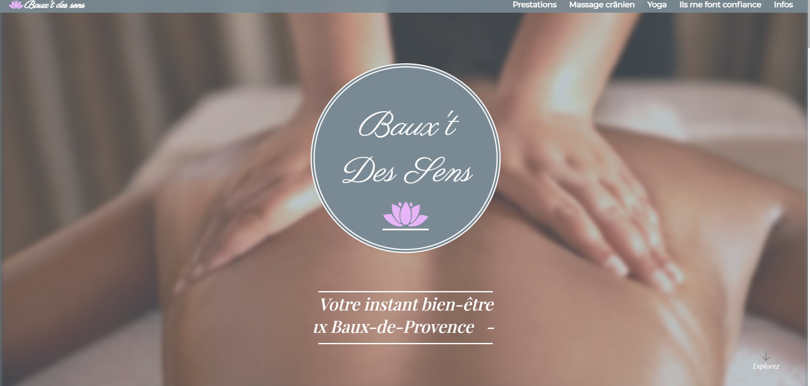
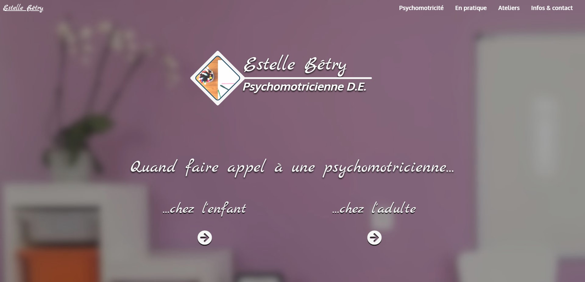
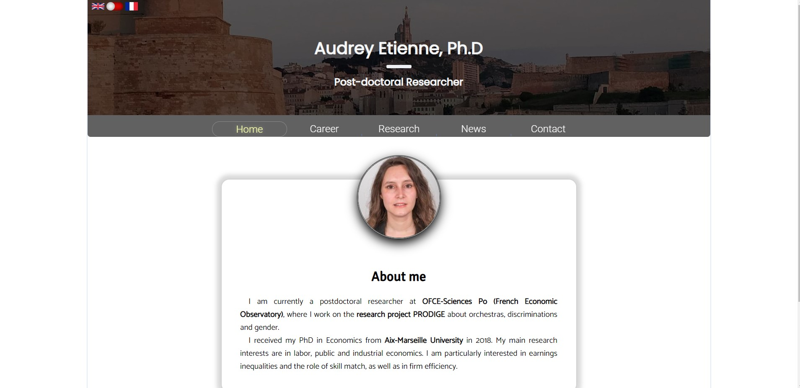
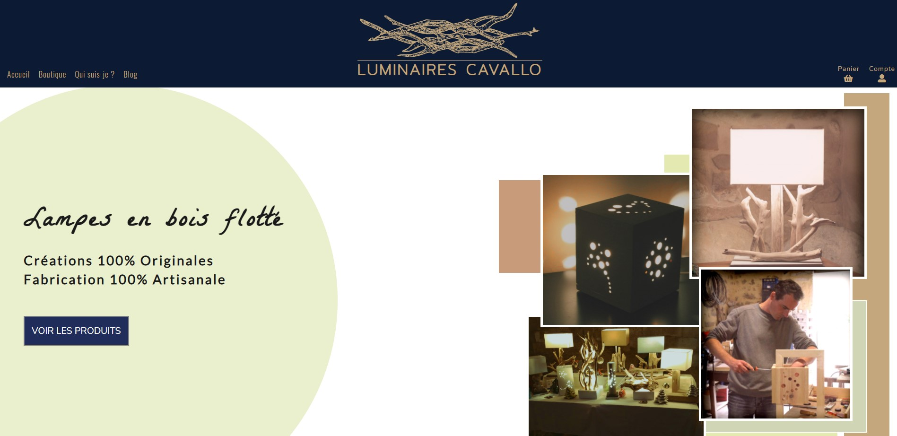

Baux't des sens

Ce site a été conçu pour le compte d'une masseuse professionnelle indépendante.
Stack technique :
- Framework NextJS pour un SEO efficace et l'utilisation de React
- Scrolling "smooth" via la fonction requestAnimationFrame()
- Responsive
- Animation via Framer-Motion
- React Intersection-Observer
Estelle Bétry, psychomotricienne

Ce site a été conçu pour le compte d'une psychomotricienne exerçant en libéral.
Stack technique :
- Framework NextJS pour un SEO efficace et l'utilisation de React
- Utilisation de Locomotive-Scroll
- Responsive
- Animation via GSAP
- React Intersection-Observer
Audrey Étienne, chercheuse en économie

Ce site a été conçu pour le compte d'une chercheuse en économie. Il a avant tout été pensé comme une single page app.
Caractéristiques :
- Vanilla JS
- Anglais et français disponibles
- Utilisation de Bootstrap
- Responsive
Luminaires Cavallo

Ce site est une "re-création" d'un site existant effectué pour un artisan qui avait fait son site via PrestaShop. Il n'a pas été retenu par cet artisan mais m'a beaucoup appris concernant le MERN stack.
Caractéristiques :
- Conçu selon les principes du MERN stack
- Back-end
- Animation avec Framer-Motion
- Transition "continue" entre les pages
- Implémentation du paiement via le SDK de Paypal
- Implémentation de l'API de Mondial Relay
- Partie Administrateur avec CRUD disponible
- Hébergé gratuitement sur Heroku
- Responsive